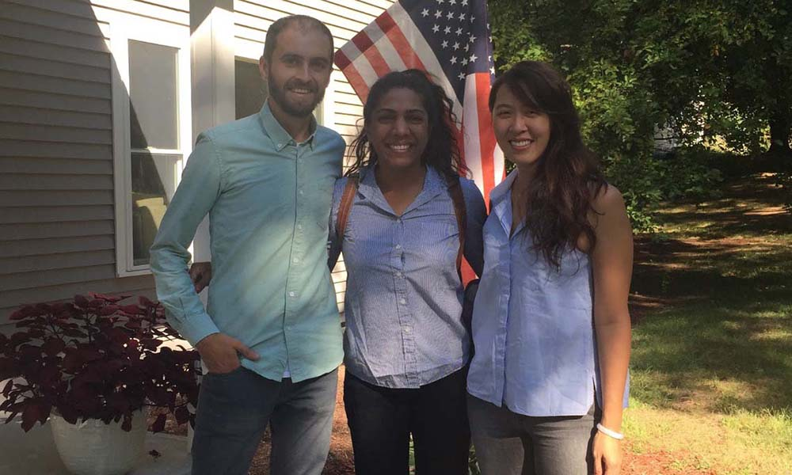
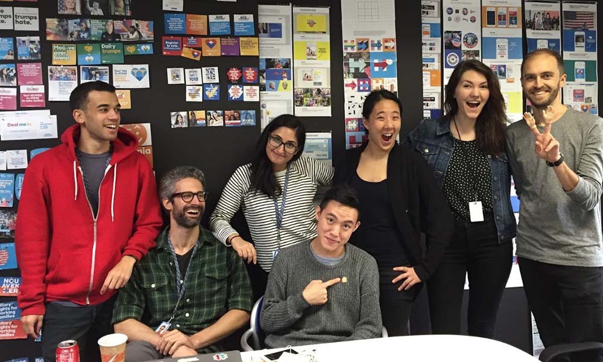
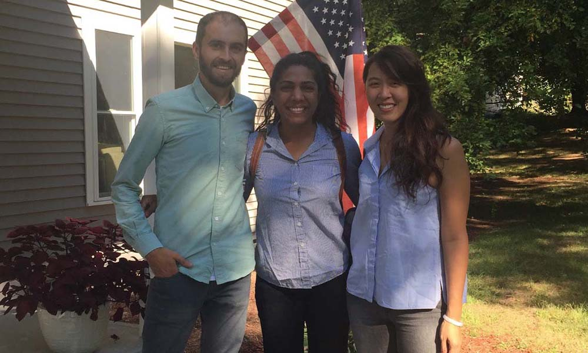
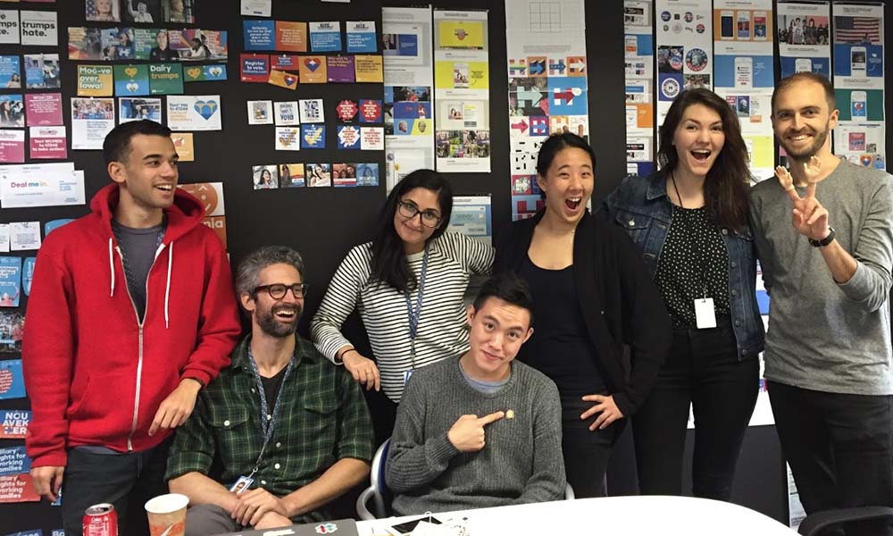
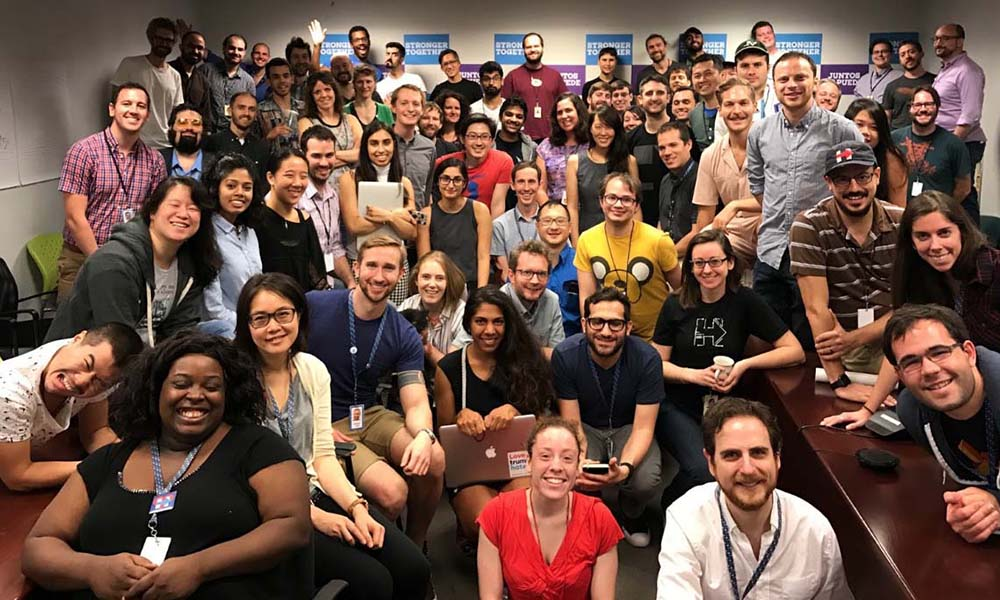
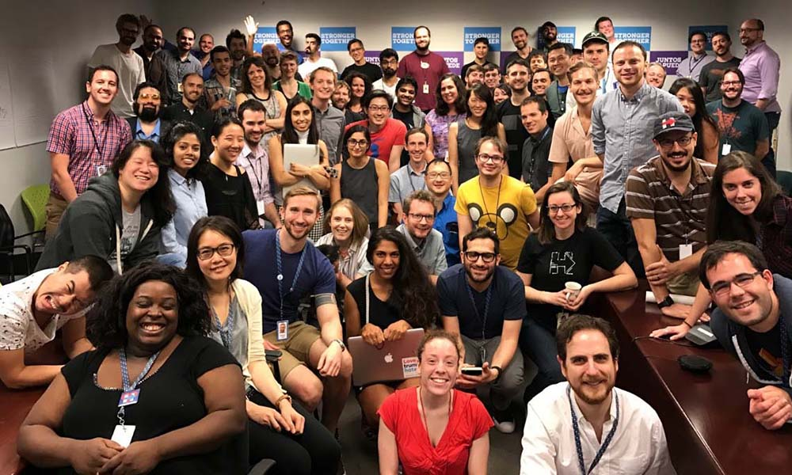

 

2015-16
Hillary For America
In 2015 I had the opportunity to join Hillary Clinton’s historic Presidential Campaign which became one of the most formative experiences of my career. I joined as the first Product Designer and the 6th member of the product team.
In the 16 months that followed, the campaign would grow to include more than 700 full-time staff at our headquarters in Brooklyn and thousands more nationwide. Often referred to as the world's only year-long, nationally televised, hackathon - our product team was responsible for building 42 applications, raising $960 million dollars, and earning the votes of 66 million Americans.
For the first half of the campaign, I served as the sole product designer on staff during a highly-competitive primary election. I was responsible for recruiting and managing a national team of remote design volunteers who created digital products that supported all aspects of the campaign including fundraising, organizing, and volunteer tools. In addition to resource management I actively contributed as lead designer on multiple products including the Hillary Clinton Mobile App, Northern Lights, the VAN Chrome Extension and Megaphone.
During the general election, I turned my attention to voter tools covering voter registration, activation, and protection thorough products like Lawyers Bound for Justice, iwillvote.com, and our Facebook Messenger Registration bot. Each of these products deserves their own case study (which I hope to get to someday) but until then, here are my favorites:
Hillary Clinton App
I collaborated with Product Manager, Stephanie Cheng to lead a design sprint that planted a seed for one of the most adventurous product ideas on the campaign - a virtual campaign office. Our goal was to create an engaging product for supporters who had expressed affinity for the candidate, but had not donated, volunteered, or attended a campaign event. During the discovery phase of the design sprint we learned that that many of our core voting blocs (women, people of color, ages 30-50) are also the primary consumers of mobile/social games (think Candy Crush). After months of prototyping and validating the concept, we decided to bring in Tim Barnes, an accomplished illustrator from Cartoon Network to bring the concept to life. The app launched during the Democratic National Convention and became an extremely valuable asset for keeping supporters engaged through targeted daily actions.
→ Wired: Clinton’s App Is Trouncing Trump’s in Pretty Much Every Way
→ Medium: The Hillary Clinton app is one of the best digital organizing tools ever made
→ User Onboarding: How Hillary 2016 Onboards New Users
Northern Lights
Northern Lights is a first-of-its-kind digital reporting program that our team launched for the primary caucuses. The program consisted of two digital tools. The first is a native app ("Reporter") for iOS & Android which allowed "Caucus Captains" to quickly calculate delegate distribution while taking complex caucus rules into account. The second is a web app dashboard ("Aurora") that provided unprecedented visibility into live caucus tallies at campaign headquarters.
→ Wired: Clinton camp gives the Iowa Caucus a silicon valley upgrade.

Lawyers Bound for Justice
Unfortunately, in every election there are coordinated efforts (including misinformation and intimidation) which aim to inhibit certain Americans from voting. LBJ is a software tool that our team created to support a massive voter protection initiative that was run by the campaign. LBJ empowered program directors to recruit and manage more than 2,000 volunteer lawyers who served as poll observers. LBJ also played a vital role in the triage and reporting of issues by identifying the most serious issues in the most valuable districts. As the lead designer on this product, I embedded with the voter protection team for the majority of 2016. First, taking part in the New York State Primary Election to analyze the strengths and weaknesses of the existing offline process. Then, traveling to Wisconsin to test a beta version of our app during a Special Election that summer. I’m proud to say that LBJ is still actively used by the Democratic National Committee to protect the rights of Americans in local, state and national elections.

I Will Vote
Our team rebuilt IWillVote.com from the ground up with the goal of making it the fastest way to check your registration status, register to vote, or find your polling location. The beautiful branding was done by Victor Ng and thanks to Google for their Civic Data API which made this project possible. I'm proud to say that IWillVote.com has helped hundreds of thousands of Americans to get registered and it is still the primary digital registration product used by the Democratic National Committee. Don't just take my word for how great it is - listen to this guy...
If you like working on complex problems and want to have a meaningful impact on the effectiveness of our government, consider getting involved with one of these organizations: USDS, Presidential Innovation Fellows, 18F, and Code for America.